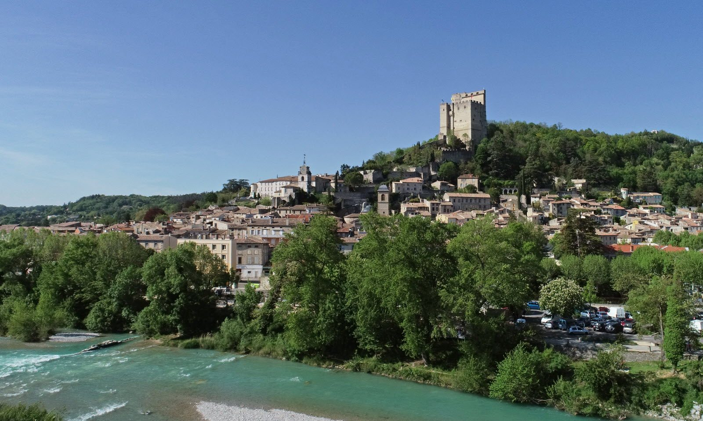

Met zijn 52 meter is de Tour de Crest de hoogste donjon van Frankrijk. Hij nodigt u uit om 900 jaar geschiedenis te herbeleven, van middeleeuwse burcht tot staatsgevangenis, op ongeveer 45 minuten van Les Cabritas.

Van omstreden kasteel tot staatsgevangenis
De bouw van de Tour de Crest begon in de 12e eeuw: hij vormde de donjon van een imposant kasteel waarom de bisschop van Die en de graaf van Valentinois streden. Vanaf de 17e eeuw werd het kasteel ontmanteld, maar de toren bleef behouden en werd tot halverwege de 19e eeuw een staatsgevangenis. Er zaten onder meer protestanten, gevangenen op koninklijk bevel (lettre de cachet), zijdewerkers uit Lyon (de Canuts) en opstandelingen van 1851.
Een meeslepend bezoek door de eeuwen heen
Binnen brengen ensceneringen en gereconstrueerde cellen de negen eeuwen geschiedenis van de toren tot leven. Een meeslepende audio-ervaring laat de stem horen van een voormalige gevangenisbewaarder uit de 18e eeuw, die zijn ervaring en kennis deelt. Vanaf de top kijkt de toren uit over het stadje Crest en biedt hij een uitzonderlijk panorama over het dal van de Drôme. Wie avontuurlijk is, kan zelfs abseilen langs de oostgevel van 42 meter, onder begeleiding van gediplomeerde klimmonitoren.
Goed om te weten voor uw bezoek
Het bezoek is makkelijk te combineren met een wandeling door het stadje Crest zelf. Abseilen moet u vooraf bij de monitoren reserveren. Een uitje dat zowel geschiedenisliefhebbers als gezinnen op zoek naar een mooi uitzicht zal bevallen.
Praktische informatie vanuit Les Cabritas
- Afstand vanaf Flaviac: ongeveer 45 min rijden
- Beste periode: het hele jaar door
- Ideaal voor: geschiedenis, panoramisch uitzicht, sensatiezoekers (abseilen)
Zin om de Tour de Crest te ontdekken vanuit uw vakantiehuis in de Ardèche?
Les Cabritas verwelkomt u in Flaviac, in het hart van de Ardèche, voor een comfortabel verblijf met privézwembad, vlak bij de mooiste plekken van de streek.
Beschikbaarheid bekijken